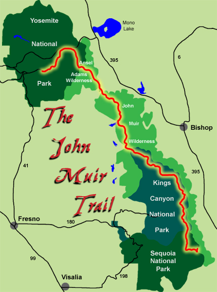

- No new gear
- Pre-trip testing and shakedown
- Shelter
- Packs
- Bear Canister
- No new gear
- Sleeping Bag
- Go-to piece of gear
- Electronics
Clothing

- Footwear
- Hiking clothes
- Sleep clothes
- Rain gear
- Down jacket
- Hats / gloves
- Buff
- Sun Protection
- Bring what you will eat
- Stoves
- Can you afford to lose weight?
- Counting calories vs food weight
- Simple vs complex carbs
- Sharing meal responsibilities
- Resupply goodies
- Nido
- Water is heavy
- Purification options
- Backup purification options
Preparation / Logistics

- Pack your gear at home
- Pack your bear canister at home
- Pack your bear canister from your resupply at home
- Go solo!
- Go with compatible hiking companions (nobody new!)
- SOBO / NOBO
- Choose time of year
- Planning where to camp vs miles per day
- Resupply
- Online resources
- PCT / JMT apps
- Maps
- Exit plan in case of emergency
Training

- Altitude - have you been to 10K feet elevation or higher?
- "Local" altitude training
- Are you prone to injuries? Blisters?
- Train in expected (adverse) conditions
- Train with expected pack weight and gear
- Train for the mental aspect (10+ hrs/day hiking)
On The Trail

- Acclimatization
- Field repairs
- Keeping cool
- Blister prevention / treatment
- Chafing
- Dust / allergens
- Altitude sickness
- Take time to rest, chat with other hikers